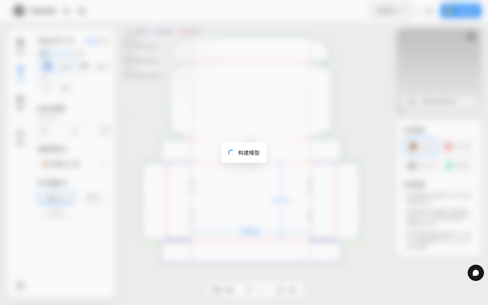
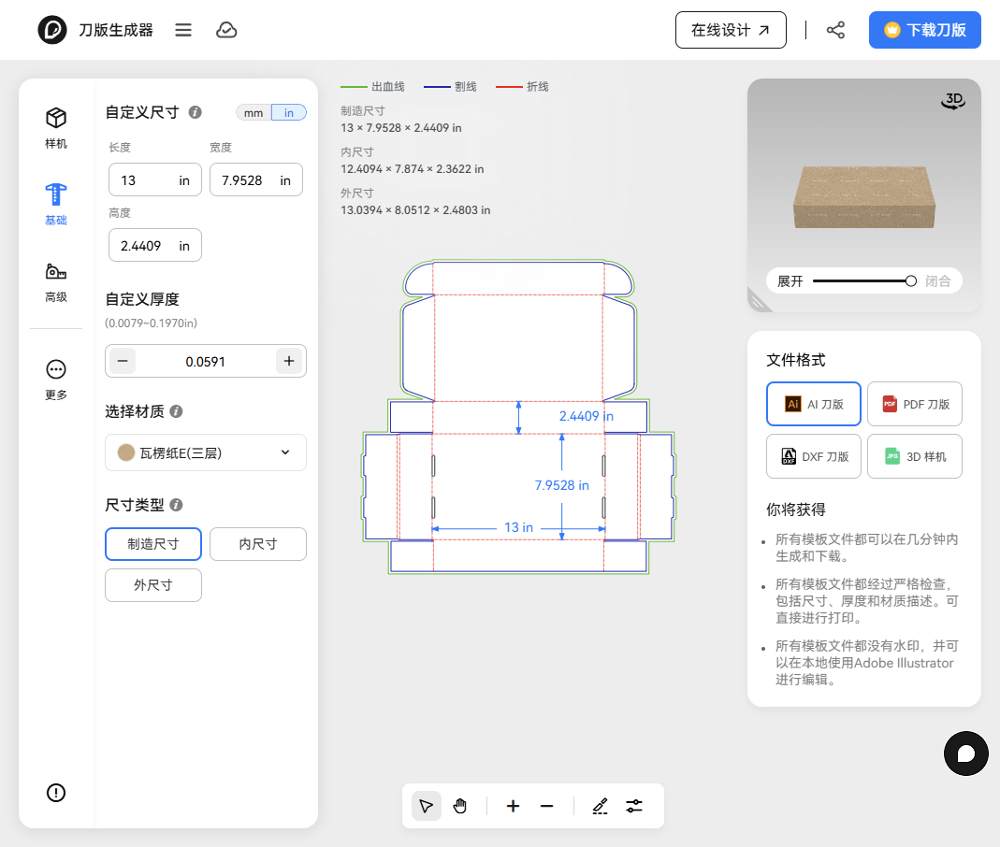
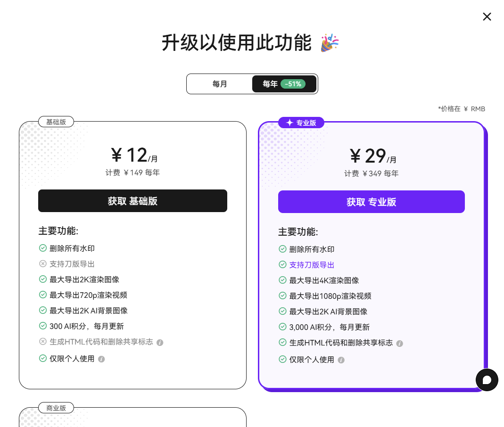

一句话结论
刀版几何全部在服务端生成；浏览器只负责“画”和“折”。前端把尺寸、厚度、结构参数提交给后端，后端返回一份完整的刀版 JSON（面、切线、折线、出血、标注、折叠动画）；前端用 SVG 画 2D 刀版，再把同一份 JSON 喂给一个 knife2gltf.wasm 模块实时生成 glTF 3D 模型和折叠动画；下载 AI/PDF/DXF 时由服务端异步出文件，前端轮询任务状态。
谁算几何
服务端（/api/v2/project/knife）。前端在分析范围内没有找到刀版生成算法，只有厚度拆分这类小计算。
3D 从哪来
不是预制模型。浏览器下载 knife2gltf.min.wasm（C++ 编译的 Emscripten 模块），把刀版 JSON 实时转成 glTF。
文件怎么出
服务端异步任务：POST 导出 → 每 2 秒查询任务记录 → 完成后自动下载；同时最多 3 个进行中任务。
为什么要付费
访客能看、能改基础尺寸；保存/导出要登录，导出还要订阅权益 exportDieline；“高级”结构参数要 Pro。
整体架构
cate（150010 = 飞机盒 Aircraft）+ 参数化规则 + 材质库前端技术栈 观察
| 模块（Vite 分包文件名） | 作用 |
|---|---|
vue-*.js / vue-router-*.js | Vue 3 应用壳与路由 |
exportEffect-ce67….js | 页面核心状态：加载模型、建工程、改尺寸（PUT 工程）、取刀版、导出 |
exportEffect-3fe0….js | 导出任务队列：记录/轮询/重试/取消 |
Calc-*.js | 厚度拆分为内缩/外扩（见“尺寸与厚度”） |
Dieline-*.js + Clip-*.js | Canvas 画家类：底色、出血、面填色、贴图/文字/形状设计层、水印 |
App-*.js | 页面 UI：2D 刀版画板 knife-sketch-box、高级参数面板、分享、保存 |
pacdora-3d-*.js（约 2MB） | Three.js 场景、GLTF/DRACO 加载器、knife2gltf WASM 胶水代码、材质与高亮 |
pacdora-login / pacdora-pay | 登录（微信/谷歌/邮箱等）、订阅支付（国内与 Stripe 等） |
页面加载链路
两次 REA 浏览器抓取（临时无头 Chrome，访客身份）记录到的业务请求顺序：
A. 不带 ?id=（访客预览路径）观察
| # | 请求 | 用途 |
|---|---|---|
| 1 | GET /api/v2/users/experience_user | 给访客分配体验用户（返回 id + uid） |
| 2 | GET /api/v2/users/permissions、/pay/unified/cn/plans | 权限与订阅套餐 |
| 3 | GET /api/v2/materials/science?pageSize=1000&scienceType=1 | 材质列表（瓦楞、白卡、牛皮等，含厚度范围） |
| 4 | GET /api/v2/models/details?nameKey=…-150010 | 模板元数据：默认尺寸 315×202×62、默认材质、gltf id、样机设置 |
| 5 | GET /api/v2/models/preview?id=1 | 预览用“伪工程”（size_type=dm、厚度 1.5、内缩 1 / 外扩 0.5） |
| 6 | GET /api/v2/project/knife/preview?id=1 | 完整刀版 JSON（33KB） |
| 7 | GET /api/v2/modes/category/cal?cate_id=1&width=202&height=62&length=315 | 该尺寸下允许的厚度范围（0.2–5mm） |
| 8 | GET oss.baoxiaohe.com/…/knife2gltf/1.1.8/knife2gltf.min.wasm | 3D 折叠引擎（国内走阿里云，海外走 cdn.pacdora.com） |
B. 带 ?id=47665178（他人工程）观察
前 4 步相同，随后请求 GET /api/v2/projects/info?id=47665178 返回 {"code":422,"msg":"权限不足"}，控制台报 Error: 权限不足，页面停在“构建模型”。也就是说 URL 里的 id 是某个用户保存的工程，只有工程所有者能打开；访客应使用不带 id 的链接。

刀版数据结构（核心）
/api/v2/project/knife/preview 与 /api/v2/project/knife 返回同一种结构。以 150010 默认尺寸为例 观察：
{
"modeCate": { "code": "Aircraft", "cate_no": 150010,
"lengthLimit": "20,2000", "widthLimit": "20,2000", "heightLimit": "17,2000",
"layerList": [{ "name": "traditional", "minThickness": 0.2 }], ... },
"science": { "name": "瓦楞纸E(三层)", "thickness": 1.5, "inless": 1, "outless": 0.5, "bleedline": 5 },
"size": { "L": 300, "W": 200, "H": 60, "D": 1.5 }, // 内尺寸
"knifeSize": { "L": 315, "W": 202, "H": 62 }, // 制造尺寸（刀版上量到的）
"outSize": { "L": 316, "W": 204.5, "H": 63 }, // 外尺寸
"layer": { "traditional": {
"faces": [19 个面，每个有 name / x / y / w / h / dlist(路径，边上标 foldline)],
"cuts": [89 段，M/L/A/Z 命令], // 切线
"folds": [22 条，{name:"F_FT", x1,y1,x2,y2}], // 折线，名字=相邻两面
"holes": [4 个圆角孔],
"bleeds": [58 段], // 出血线
"totalX": 576, "totalY": 590, // 展开尺寸 mm
"sizeArrowData": [21 条尺寸标注],
"transform": { 3D 初始摆放 },
"animation": { "groups": [...], "animations": [9 步折叠] }
}},
"openParams": [20 个结构参数，分 grade 2–5],
"extra": { "foldlineLength": 3065, "cutlineLength": 3638.59,
"corrugatedBoardSetting": { "rotate": 90 } }
}
关键设计点
- 面拓扑命名：
F(前)、H(底/背)、L/R、FT/FB/HB等；折线名F_FT表示“F 与 FT 之间的折线”。面路径上的边也标注foldline，所以 2D 线和 3D 铰链用的是同一套名字。 - 折叠动画是数据：例如第一步
{name:"H_FB", rotate:90, vector:{x:-315}}、第二步HB_HBL±90°…共 9 步。3D 引擎按步骤绕折线旋转，前端用group.tick(0–100)控制“展开 ↔ 闭合”。 - 结构参数 openParams：如
N摇盖参数、NX/NY开槽厚度、K/SW/SP孔数/孔长/孔距、R/R1/R2/CR各处倒角、MT角度、TRH最高点等，每个带 min/max。改它们会重新请求后端生成刀版。 - 线长统计：
foldlineLength / cutlineLength由后端算好，可直接用于报价（刀模按线长计价）。
尺寸与厚度
三种尺寸类型 观察
界面“尺寸类型”有 制造尺寸 / 内尺寸 / 外尺寸，代码映射为 {dm:"knifeSize", id:"size", ed:"outSize"}。用户输入哪一种，工程的 size_type 就记哪一种；后端同时返回三套尺寸。默认 150010：制造 315×202×62、内 300×200×60、外 316×204.5×63（mm）。
厚度拆分公式（前端 Calc 模块）观察
inless = thickness <= 0.9
? ROUNDDOWN(2 × thickness / 3, 0.05)
: ROUNDDOWN(2 × thickness / 3, 0.5)
outless = round(thickness − inless, 2)
例：1.5mm 瓦楞 → inless = ROUNDDOWN(1.0, 0.5) = 1.0，outless = 0.5（与接口返回一致）
改厚度时前端把 thickness / inless / outless / science_id 写入每个非灰板图层，再 PUT /api/v2/projects，然后重新 GET /api/v2/project/knife 取新刀版，最后 GET /modes/category/cal 更新允许的厚度范围。
尺寸补偿关系 推断
从默认数据看：制造宽/高 = 内尺寸 + 2×inless（200→202、60→62）；外宽 = 内宽 + 3×厚度（200→204.5），外高 = 内高 + 2×厚度（60→63）。长度方向（300→315→316）含结构余量，具体系数由后端 getKnifeSizeAdd / getOutSizeAdd（按 id/ed/of/d/sd 分项）决定，精确语义未知。
2D 刀版渲染
观察 页面为每个图层渲染一个组件，DOM id 为 knife-traditional，内部是一张 SVG，数据来自 knife.layer[图层]。画板 .knife-sketch-box 支持滚轮缩放与拖拽；“展开/闭合”“出血线/割线/折线”开关存于 localStorage.KNIFE_MARK_SWITCH_SETTING。
配色常量（Dieline 画家类）：
切线 #2028b0，
折线 #ff0000，
出血 #68b82e。
保存工程时，前端把各图层 SVG 序列化后画到 Canvas，导出 PNG 上传 OSS 作为工程缩略图（函数 je()）。导出时也会先截一张刀版图随任务提交。
另有 Canvas 画家类负责“设计层”：底色/材质纹理、面填色、图片、文字、形状、分组、悬停高亮、会员外水印。2D 预览按展开尺寸自动选缩放倍率（<500mm 用 9 倍，<800 用 6 倍……）。
3D 折叠：knife2gltf WASM
调用链 观察
// pacdora-3d 包内（已去混淆命名）
async function buildModel(knife, lang) {
const layer = pickMainLayer(knife) // 取非灰板主图层
const input = { totalX, totalY, faces, cuts, folds, holes, bleeds,
bleedline, sizeArrowData, thickness, transform, animation }
const gltf = knife.modeCate.code === "CurveBox"
? await curveBoxBuilder(input) // 曲面盒走 JS 专用实现
: await knife2gltf(lang === "zh-CN" ? "ali" : "aws", knife)
return parseGLTF(gltf) // GLTFLoader + DRACO
}
async function knife2gltf(cdn, knife) {
Module ??= await (cdn === "aws" ? awsModule : aliModule)() // Emscripten
const json = JSON.stringify(knife)
return UTF8ToString(_generateGLTFData(allocateUTF8(json), 0, null, 0, false))
}
- WASM 版本
knife2gltf 1.1.8，地址：oss.baoxiaohe.com/static/wasm/knife2gltf/1.1.8/knife2gltf.min.wasm（海外cdn.pacdora.com/scripts/wasm/…）。导出函数只有generateGLTFData。 - 输出的 glTF 里每个图层生成
{层}_outer / _inner / _side / _inner_collapse / _outer_collapse网格：外表面、内表面、纸板侧边，以及折叠后的形态。前端为外/内表面各建一份MeshPhysicalMaterial，侧边单独材质，并把 UV 的 V 轴翻转。 - glTF 自带动画，前端通过
group.tick(k)（0–100）驱动折叠进度；默认 100 = 闭合，并倾斜 30° 展示。登录态运行时已确认：折叠是 WASM 预烘焙的变形目标（morph target）动画，不是骨骼、也不是前端实时绕轴旋转，详见“登录态补充”。 - DRACO 解码器：国内
yun.baoxiaohe.com/three/draco/，海外cdn.pacdora.com/three/draco/。另加载一张.hdr环境贴图做光照。 - 非会员 3D 上会叠加水印（
showWatermark(!isMember)）。
未知 WASM 内部的折叠/厚度偏移算法未反编译（本次只分析了 JS 胶水与调用方）。如需深入，可下载该 .wasm 用 REA 的 inspect_wasm_artifact 做 WAT 级分析。
导出下载（AI / PDF / DXF / 3D 样机）
按钮与接口映射 观察
| 界面按钮 | 内部类型 | 接口 |
|---|---|---|
| AI 刀版（默认选中） | ai | POST /api/v2/box/export/ai |
| PDF 刀版 | design | POST /api/v2/box/export/knife |
| DXF 刀版 | dxf | POST /api/v2/box/export/dxf |
| 3D 样机 | mockup | 前端渲染截图 JPG 下载（文件名含尺寸与日期） |
请求体（PDF/AI）观察
{
id: 工程ID, export_type: "project", origin: "dieline",
payFlag: "dieline-detail-150010-ai", // 计费/统计标识
color_mode: "RGB", unit: "mm" | "in",
image: "<先上传的刀版截图 URL>",
contentName: "翻盖礼品盒_315×202×62_mm", // 文件命名：名称_长×宽×高_单位（英寸时换算）
showOverallDimensions, showBasicDimensions, // 总尺寸/基础尺寸标注
showBleedLine, showAnnotationInformation, // 出血线/注释信息
...printGuidelinesColors // 印刷参考线颜色
}
异步任务 观察
task_idGET /box/export/task/record，分 running / finishedfile_path，并 task/read 标已读retry / cancel任务状态枚举：0 排队 · 1 导出中 · 2 成功 · 3 失败 · 4 取消；进行中任务 ≥3 个时拒绝新导出并提示。
登录与付费门槛
| 动作 | 访客 | 门槛实现 |
|---|---|---|
| 浏览刀版、改基础尺寸/厚度/材质、看 3D | 可以（体验用户） | experience_user 下发匿名身份 |
| 保存工程 | 弹登录 | 已登录用户无需点保存：首次改参数即自动建工程并持续 PUT（见“登录态补充”）。访客点保存时走单例流程：登录 → 若 URL 有工程 id 则复制（project_type:9），否则新建（POST /projects project_type:4） |
打开别人的工程 ?id= | 422 权限不足 | 服务端按工程归属校验 |
| 导出 AI/PDF/DXF | 登录 + 订阅（专业版起） | 先登录，再拉付费弹窗；只有 benefitValid.exportDieline 为真才真正发导出请求。登录态实测：无订阅账号点击后未发出任何导出请求，直接弹升级窗；基础版（￥149/年）不含刀版导出，专业版（￥349/年）起才有 |
| “高级”结构参数（openParams） | Pro | GET /pay/unified/checkPro；非 Pro 显示遮罩 |
| 3D 无水印 | 会员 | showWatermark(!isMember) |
注：页面文案写“所有模板文件都经过严格检查…可直接进行打印”，属于营销表述；实际投产仍需工厂核验（与我们站点免责声明的立场一致）。
登录态补充（Cursor 浏览器，用户本人登录）
为补齐访客抓取覆盖不到的部分，在 Cursor 内置浏览器中由用户本人登录（无订阅账号，界面单位设置为英寸），在页面里注入只读请求记录器（包装 XHR/fetch，只记 /api/v2/），然后做了两个动作：把长度从 12.4016in 改为 13in；点击「下载刀版」（AI）。
1. 保存流程：懒创建 + 自动保存 观察
| # | 请求 | 要点 |
|---|---|---|
| 1 | POST /projects {"project_type":4,"model_id":1,"type":"dieline","project_name":"翻盖礼品盒"} | 首次进入编辑即新建自己的工程（id 47665680），地址栏随之变为 ?id=47665680。这解释了原始链接 ?id=47665178 的来历：那是别人这样生成的工程 |
| 2 | GET /projects/info → GET /project/knife?id=…&bleed=5&export_type=project → /modes/category/info → /modes/category/cal | 读工程、按工程生成刀版、取分类与厚度范围 |
| 3 | GET /modes/category/cal?…&length=330.2 | 输入 13in 后先在前端换算成毫米（13 × 25.4 = 330.2）再校验厚度范围 |
| 4 | PUT /projects {"id":47665680,"length":330.2,"width":202,"height":62,"thickness":1.5,"inless":1,"outless":0.5,"size_type":"dm","science_id":5,"bleed":5,"layer":{"traditional":{…}},"user_data":{背景渐变}} | 无需点保存按钮，改参数即整份覆盖写入；后端只存毫米，英寸只是显示层 |
| 5 | 再次 GET /projects/info → GET /project/knife → /modes/category/info → /cal | 重新取刀版并重画 2D/3D（截图中制造尺寸变为 13 × 7.9528 × 2.4409 in） |
| 6 | GET /home/sts | 下发阿里云 OSS 临时凭证（STS），浏览器直传缩略图到 oss.pacdora.cn/frontend/upload/dieline-detail/*.jpeg（凭证值已省略，不入报告） |
| 7 | PUT /projects {"id":…,"screenshot":"https://oss.pacdora.cn/…jpeg","type":"dieline"} | 回写缩略图地址 |
每次改尺寸约 7 个请求、单个 160–300ms。刀版仍然完全由服务端按工程重新生成，前端没有本地几何计算，这与静态分析结论一致。

?id=47665680。2. 3D 运行时：预烘焙变形目标动画 观察
登录态下 WASM 正常从 oss.baoxiaohe.com 加载，页面全局变量 window.gltfData 保存了 knife2gltf 的输出。解析结果：
| 项目 | 实测值 |
|---|---|
| generator / extras | "BXH"（包小盒）；asset.extras = {model:"150010", origin:"knife"} |
| 体积 | glTF JSON 约 9.8MB，内嵌 1 个 base64 buffer（6.98MB） |
| 节点 / 网格 | 5 个：traditional_outer / _side / _inner / _inner_collapse / _outer_collapse |
| 顶点属性 | POSITION、TEXCOORD_0、自定义 USERNORMAL |
| 折叠方式 | 每个网格 90 个 morph target；唯一一条动画驱动 5 个节点的 weights，90 个关键帧、0–8.9 秒、线性插值。没有骨骼 |
| 单位 | 米：totalX 0.576、totalY 0.59（即 576×590mm 展开）；侧边网格 totalY 0.0015 = 1.5mm 厚度 |
| 面拾取 | mesh.extras.faces 把面名（F、H、FT…）映射到三角形索引区间，用于悬停高亮与按面贴图 |
推断 WASM 按刀版 JSON 里 9 步 animation 把折叠过程离散成 90 帧顶点形态（约每步 10 帧）一次性写进 glTF；前端「展开 ↔ 闭合」滑块 0–100 只是映射到动画时间 0–8.9s，播放时不做任何几何计算，所以拖动非常流畅。代价是模型体积大（约 10MB/次），每改一次尺寸都要重新生成。
3. 导出：止于付费墙 观察
无订阅账号点击「下载刀版」后只发出 GET /pay/unified/recent/order（返回 null）和 GET /seo/info?id=303（付费弹窗的 CMS 内容，弹窗 HTML/CSS 由后台下发），没有发出 /box/export/* 请求，直接弹出“升级以使用此功能”。套餐：基础版 ￥149/年不含刀版导出；专业版 ￥349/年起含 AI/PDF/DXF/3D 样机 JPG 导出。

task/record 轮询的实际报文、AI/PDF/DXF 文件内容、服务端是否二次校验订阅，仍为 未知。需要一个有专业版权益的账号才能补齐。接口清单（静态提取 + 运行时观察）
| 领域 | 接口 | 说明 |
|---|---|---|
| 模板 | GET /models/details?nameKey= | 模板元数据、样机设置、上一/下一模板 |
GET /models/preview?id= | 访客预览用工程数据 | |
GET /modes/category/cal、/modes/category/info | 厚度范围；工程对应的分类信息 | |
| 工程 | POST /projects | 新建（type 4）、复制（type 9）、另一类型（type 3） |
PUT /projects | 改尺寸/厚度/材质/结构参数/名称/缩略图 | |
GET /projects/info?id= | 读工程（校验归属） | |
| 刀版 | GET /project/knife?id=&bleed=&export_type=project | 按工程生成刀版 JSON |
GET /project/knife/preview?id= | 按模板生成预览刀版 | |
POST /project/knife/captcha/verify | 疑似防刷验证（出现在登录/支付包内） | |
| 导出 | POST /box/export/{ai|knife|dxf} | 提交导出任务 |
GET /box/export/task/record、POST task/{read|retry|cancel} | 任务队列 | |
| 材质 | GET /materials/science、/material_effect | 纸材与工艺效果 |
| 分享 | POST /project/share/{add|update} | 生成公开分享链接 |
| 付费 | /pay/unified/*、/pay/PMax|dlocal|dukpay/* | 国内与海外多通道订阅 |
以上路径均带前缀 /api/v2；静态提取共 70+ 条，此处只列与刀版功能相关的部分。
对 BOXCRAFT 的启示
1. 一份刀版 JSON 驱动全部
Pacdora 的 2D、3D、标注、报价线长、导出都吃同一份结构化数据。我们现有 knife.layers 方向一致，可补齐“折线名 = 相邻面名”“折叠步骤数据化”两点。
2. 几何放服务端
参数化规则与生成逻辑在后端，前端拿不到算法，也便于统一给导出服务复用。我们若要做商用，同样建议关键几何生成在服务端。
3. 3D 用 WASM 实时折
Pacdora 用 C++→WASM 把刀版转 glTF，并把折叠过程预烘焙成 90 帧 morph target，滑块只是在播动画。我们目前用 Three.js 直接建面也可行，且无需传输约 10MB 的模型；性能或复杂结构遇瓶颈时可参考这条路线。
4. 三套尺寸 + 厚度拆分
内/外/制造尺寸并存，厚度按 2/3 规则拆为内缩/外扩。可作为我们尺寸补偿的对照基准（具体系数需自行验证，不应照抄）。
5. 异步导出 + 并发上限
与我们现有导出任务模式相同；可借鉴“≤3 并发”“失败可重试”“完成自动下载并标已读”。
6. 配色约定接近
Pacdora 切线 #2028b0 / 折线 #ff0000 / 出血 #68b82e；我们 exportDieline.js 为 #2028b0 / #fa0000 / #46ba00。切线完全一致，折线与出血是同色系，用户在两边看图习惯一致。
证据与局限
REA Evidence
| Evidence ID | 内容 |
|---|---|
ev_3d24bda27e9a98340f1f27536598fd34294a193c0a3754bad22db871a592f74f | 浏览器场景 A：带 ?id=47665178，等待 9 秒，175 个请求，含 422 权限不足 |
ev_fcd8dba7d18eeda879a69259a94d8f6e4ed711f3f311058e9d1f57786824fe3a | 浏览器场景 B：访客路径，等待 25 秒，178 个请求，含刀版 JSON 与 WASM 请求 |
ev_ad167e270eac185a8103ee5599e320e2400995bb9f62644f2aebf2bb2c40f6d6 | JS 静态分析：12 个关键分包，16,586 个 AST 节点，461 条发现 |
标注说明
观察 抓包或源码中直接看到；推断 由观察数据推出、未直接证实；未知 本次未覆盖。
局限
- REA 抓取为未登录访客；登录态补充在 Cursor 浏览器中完成（用户本人无订阅账号），已实测保存流程与 3D 运行时。
- 导出在付费墙处停止：导出任务报文、轮询、文件内容与服务端订阅校验未实际执行，导出流程仍来自源码静态分析。
- 登录态补充没有 REA Evidence ID（数据来自页面内注入的请求记录器与
window.gltfData解析）；STS 临时凭证等敏感响应未保存。 - JS 为 Vite 压缩产物，变量名已混淆，报告中函数名为便于阅读的意译。
- 静态分析只选取了刀版相关的 12 个分包（共 80 个），其余模块的关系视为未知。
- WASM 内部算法、服务端刀版生成与导出算法均未分析。
本地文件（同目录，未入库）
guest.png、flip-top-mailer-150010.png：两次抓取截图loggedin_13in.png、loggedin_paywall.png：登录态改尺寸与付费墙截图knife_preview.json：完整刀版 JSON 样本；models_details.json、guest__*.json：其余接口响应- JS 分包下载在
tmp/pacdora-rea-js/（仅用于分析）